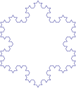
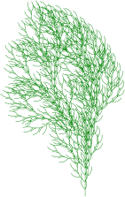
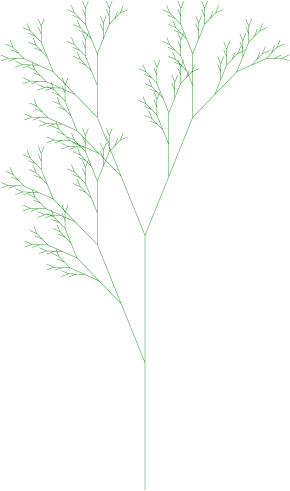
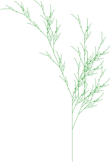

14 FRACTAL
14.1 Tổng quan về Fractal
Fractal là một môn hình học nghiên cứu các đối tượng có đặc tính tự đồng dạng (self-similarity). Đây là thuộc tính mà khi ta phóng to một phần nhỏ của đối tượng, phần đó lại mang hình ảnh giống hệt như toàn bộ đối tượng. Đặc điểm này xuất hiện rất nhiều trong thế giới tự nhiên, ví dụ như hình dạng của cây cối, đường bờ biển, các dãy núi, hay các gân lá.

Ứng dụng của Fractal
Đồ họa fractal có nhiều ứng dụng thực tiễn:
- Tạo ảnh: Dùng để tạo ra các hình ảnh tự nhiên phức tạp như mây, núi, mặt nước, cây cối.
- Nén ảnh: Các thuật toán nén ảnh dựa trên fractal khai thác sự lặp lại cấu trúc trong ảnh để giảm dung lượng lưu trữ.
- Nghiên cứu khoa học: Mô hình hóa các hiện tượng hỗn loạn, cấu trúc vật chất, và các hệ thống động lực phức tạp.
Các ví dụ Fractal cổ điển
Nhiều fractal được xây dựng bằng cách lặp đi lặp lại một quy tắc sinh đơn giản:
Đường cong Von Koch (Koch Curve):
- Tập gốc (n=0): Một đoạn thẳng.
- Quy tắc sinh: Chia đoạn thẳng làm 3 phần bằng nhau. Bỏ đoạn ở giữa và thay bằng hai đoạn thẳng tạo thành một tam giác đều.
- Lặp lại: Áp dụng quy tắc này cho tất cả các đoạn thẳng mới.

Đường cong Minkowski:
- Tập gốc (n=0): Một đoạn thẳng.
- Quy tắc sinh: Chia đoạn thẳng làm 4 phần. Bỏ 2 đoạn giữa và thay thế bằng 6 đoạn thẳng mới.

Bông tuyết Von Koch (Koch Snowflake):
- Tập gốc (n=0): Một hình tam giác đều.
- Quy tắc sinh: Áp dụng quy tắc sinh của đường cong Von Koch lên cả ba cạnh của tam giác.


Hòn đảo Minkowski:
- Tập gốc (n=0): Một hình vuông.
- Quy tắc sinh: Áp dụng quy tắc sinh của đường cong Minkowski lên cả bốn cạnh của hình vuông.

Tam giác Sierpinski:
- Tập gốc (n=0): Một tam giác đều đặc.
- Quy tắc sinh: Chia tam giác thành 4 tam giác đều nhỏ hơn bằng cách nối trung điểm 3 cạnh. Bỏ đi tam giác ở giữa.
- Lặp lại: Áp dụng quy tắc này cho 3 tam giác đều còn lại.


Số chiều tự đồng dạng (Fractal Dimension)
Một đặc điểm quan trọng của fractal là “số chiều” của chúng không phải lúc nào cũng là số nguyên (như 1D, 2D, 3D). Số chiều tự đồng dạng (D) được định nghĩa dựa trên mối quan hệ giữa số lượng bản sao tự đồng dạng (N) và tỉ lệ co (s).
Nếu một hình H được chia thành N phần, mỗi phần là bản sao của H được thu nhỏ với tỉ lệ s, thì số chiều D được tính bằng:
D = \frac{\log(N)}{\log(1/s)}
Đoạn thẳng (1D): Chia thành N đoạn nhỏ, tỉ lệ co s = 1/N. D = \frac{\log(N)}{\log(1 / (1/N))} = \frac{\log(N)}{\log(N)} = 1

Hình vuông (2D): Chia thành N \times N = N^2 hình vuông nhỏ, tỉ lệ co s = 1/N. D = \frac{\log(N^2)}{\log(1 / (1/N))} = \frac{2 \log(N)}{\log(N)} = 2

Hình lập phương (3D): Chia thành N \times N = N^3 lập phương nhỏ, tỉ lệ co s = 1/N. D = \frac{\log(N^3)}{\log(1 / (1/N))} = \frac{3 \log(N)}{\log(N)} = 3

Đường cong Von Koch: Mỗi đoạn được thay thế bằng 4 đoạn nhỏ hơn (N=4), mỗi đoạn mới có độ dài bằng 1/3 đoạn cũ (s=1/3). D = \frac{\log(4)}{\log(1 / (1/3))} = \frac{\log(4)}{\log(3)} \approx 1.26 Giá trị 1.26 (lớn hơn 1D của đường thẳng nhưng nhỏ hơn 2D của hình vuông) chính là “số chiều fractal” của nó.

14.2 Hệ hàm lặp (IFS)
IFS (Iterated Function Systems) là một cơ sở toán học vững chắc để định nghĩa và tạo ra các hình fractal.
Cơ sở toán học
Không gian Hausdorff (H(X)):
- Đây là một không gian đặc biệt mà mỗi “phần tử” của nó là một tập hợp con (cụ thể là tập compact, khác rỗng) từ X.
- Người ta định nghĩa khoảng cách Hausdorff h(A, B) giữa hai tập hợp A và B.

Ánh xạ co (Contraction Mapping):
Trong một không gian Metric đầy đủ (X, d) (nơi ta có thể đo khoảng cách d).
Một ánh xạ T được gọi là ánh xạ co nếu nó luôn kéo các điểm lại gần nhau hơn.
Tức là, tồn tại k (với 0 < k < 1) sao cho: d(T(x'), T(x'')) \le k \cdot d(x', x'') với mọi điểm x', x'' trong X.

- Tính chất quan trọng: Mọi ánh xạ co đều có một điểm bất động duy nhất. Nếu ta bắt đầu từ một điểm c bất kỳ và lặp x_{n+1} = T(x_n), dãy x_n sẽ luôn hội tụ về điểm bất động đó.
- Một hệ hàm lặp (IFS) là một tập hợp các ánh xạ co \{T_1, T_2, \dots, T_N\} trên X.
- Ta định nghĩa một ánh xạ co T mới trên không gian Hausdorff H(X) như sau: T(A) = T_1(A) \cup T_2(A) \cup \dots \cup T_N(A) (trong đó T_i(A) = \{T_i(x) \mid x \in A\}).
- Vì T cũng là một ánh xạ co (trong không gian Hausdorff), nó cũng có một “điểm bất động” duy nhất. “Điểm bất động” này là một tập hợp, và đó chính là hấp tử (attractor), hay hình fractal, của hệ IFS.

Thuật toán tạo hình Fractal từ IFS
Có hai thuật toán chính để vẽ hấp tử của IFS:
Thuật toán lặp xác định (Deterministic Algorithm):
- Bắt đầu với một hình gốc S bất kỳ (ví dụ, một hình tam giác).
- Lặp lại n lần: S = T(S) = T_1(S) \cup T_2(S) \cup \dots \cup T_N(S)
- Hình ảnh sẽ hội tụ về fractal.
Ví dụ tam giác đều (Tam giác Sierpinski): Dùng 3 phép biến đổi affine (tỉ lệ + tịnh tiến)
- T_1: Tỉ lệ (0.5, 0.5)
- T_2: Tỉ lệ (0.5, 0.5) + Tịnh tiến (0.5, 0)
- T_3: Tỉ lệ (0.5, 0.5) + Tịnh tiến (0.25, 0.433)
Ví dụ tam giác vuông: Dùng 3 phép biến đổi affine (tỉ lệ + tịnh tiến)
- T_1: Tỉ lệ (0.5, 0.5)
- T_2: Tỉ lệ (0.5, 0.5) + Tịnh tiến (0.5, 0)
- T_3: Tỉ lệ (0.5, 0.5) + Tịnh tiến (0.0, 0.5)
Thuật toán lặp ngẫu nhiên (Random Algorithm):
Input: Các phép biến đổi \{T_1, \dots, T_N\}, một điểm bắt đầu P_0 = (x_0, y_0), và số lần lặp k.
Vẽ điểm P_0.
Lặp i từ 0 đến k:
- Chọn ngẫu nhiên một phép biến đổi T từ tập IFS.
- Tính điểm tiếp theo: P_{i+1} = T(P_i).
- Vẽ điểm P_{i+1}.
Sau một số lần lặp (ví dụ k=10000), tập hợp các điểm được vẽ sẽ hiện lên hình dạng của fractal.
14.3 Hệ thống (L-System)
L-System (Lindenmayer System) là một hệ thống văn phạm hình thức, ban đầu được phát triển để mô hình hóa sự phát triển của thực vật. Nó tạo ra fractal bằng cách viết lại chuỗi (string rewriting).
Đồ họa Turtle (Turtle Graphics)
L-System thường được vẽ bằng Đồ họa Turtle. Một con “rùa” (bút vẽ) có 3 thuộc tính:
- Vị trí (p)
- Hướng (\alpha)
- Tham số vẽ: bước nhảy \Delta d và góc quay \Delta \alpha.
Các ký hiệu trong chuỗi L-System được diễn giải thành lệnh điều khiển “rùa”:
| Lệnh | Nội dung |
|---|---|
| F | Vẽ tới trước một đoạn \Delta d. |
| + | Quay bút vẽ sang trái một góc \Delta \alpha. |
| - | Quay bút vẽ sang phải một góc \Delta \alpha. |
| [ | Lưu lại vị trí (p) và hướng (\alpha) hiện tại của rùa (đẩy vào stack). |
| ] | Phục hồi lại vị trí (p) và hướng (\alpha) đã lưu (pop khỏi stack). |
Định nghĩa L-System
Một L-System bao gồm:
- Tập ký hiệu: Các ký tự mà rùa hiểu (ví dụ: F, +, -, [, ]).
- Tiền đề (Axiom) s_0: Chuỗi ký tự ban đầu.
- Tập luật sinh (Production Rules): Các quy tắc thay thế ký tự. Ví dụ: F \to F+F-F.
Quá trình thực hiện:
- Bắt đầu từ tiên đề s_0.
- Thực hiện lặp n lần: Ở mỗi bước, áp dụng đồng thời các luật sinh cho mọi ký tự trong chuỗi hiện tại để tạo ra chuỗi mới (s_0 \to s_1 \to s_2 \to \dots \to s_n).
- Dùng Đồ họa Turtle để vẽ chuỗi s_n cuối cùng.
Ví dụ L-System
Ví dụ 1
- Tiền đề s_0 = F++F++F
- Tập luật sinh
- F \to F-F++F-F
- \Delta\alpha = 60.0^\circ

Ví dụ 2
- Tiền đề s_0 = F
- Tập luật sinh
- F \to FF+[+F-F-F]-[-F+F+F]
- \Delta\alpha = 22.5^\circ

Ví dụ 3
- Tiền đề s_0 = X
- Tập luật sinh
- F \to FF
- X \to F[+X]F[-X]+X
- \Delta\alpha = 20.0^\circ

Ví dụ 4
- Tiền đề s_0 = X
- Tập luật sinh
- F \to FF
- X \to F-[[X]+X]+F[+FX]-X
- \Delta\alpha = 22.5^\circ

14.4 Tập Mandelbrot
Tập Mandelbrot là một trong những fractal nổi tiếng nhất, được định nghĩa trong mặt phẳng số phức.
Định nghĩa
Tập Mandelbrot được định nghĩa dựa trên một biểu thức đệ quy đơn giản:
- Bắt đầu với z_0 = 0 + 0i.
- Lặp lại: z_{n+1} = z_n^2 + c.
Trong đó c là một số phức. Tập Mandelbrot là tập hợp tất cả các số phức c sao cho dãy \{z_n\} không tiến ra vô cực (tức là dãy bị chặn).
Tính chất hội tụ
Một tính chất then chốt để vẽ tập Mandelbrot: Nếu tồn tại một k nào đó mà mô-đun (độ lớn) của z_k vượt quá 2 (tức là |z_k| > 2), thì dãy \{z_n\} chắc chắn sẽ tiến ra vô cực.

Thuật toán vẽ tập Mandelbrot
Thuật toán này kiểm tra từng điểm c trên mặt phẳng phức (tương ứng với từng pixel trên màn hình) để xem nó có thuộc tập hợp hay không.
Cho mỗi pixel (x, y) trên màn hình:
Ánh xạ: Chuyển đổi tọa độ pixel (x, y) thành một số phức c = x + yi trong một vùng của mặt phẳng phức.
Kiểm tra hội tụ:
Khởi tạo z = 0.
Đặt một số lần lặp tối đa (ví dụ N = 100).
Lặp i từ 0 đến N:
- Tính z = z^2 + c.
- Nếu |z| > 2: Dãy tiến ra vô cực. Điểm c không thuộc tập Mandelbrot. Dừng lặp.
Nếu vòng lặp kết thúc mà |z| vẫn \le 2: Dãy không tiến ra vô cực (trong giới hạn N lần lặp). Điểm c thuộc tập Mandelbrot.
Tô màu:
- Nếu c thuộc tập Mandelbrot, tô pixel (x, y) màu đen.
- Nếu c không thuộc tập Mandelbrot, không tô (để màu trắng) (hoặc tô màu dựa trên số lần lặp i trước khi |z| > 2 để tạo ra các hình ảnh Mandelbrot có màu sắc).